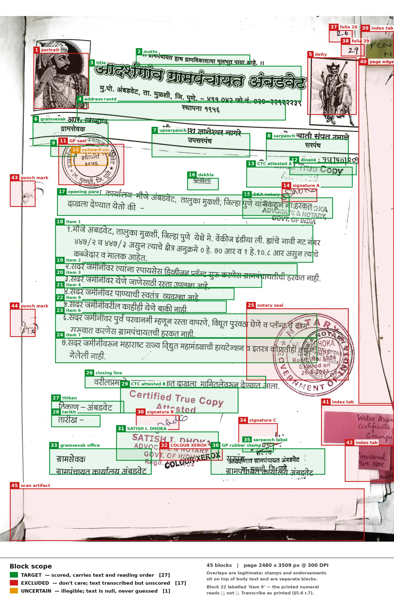

Indian Government Document Benchmark
Data Format, Annotation Guidelines, and Metrics Specification
Version: 0.9 (draft — not yet frozen) Status: For pilot annotation and reference scorer implementation
Changes since 0.8: block segmentation substantially reworked after review against ten
further government pages — the amendment test added as the stated mental model with explicit
precedence (§6.3.1–6.3.2); the enumeration trigger removed and folded into spatial discontinuity
(§6.3.3); a paragraph-boundary trigger added; documentary role replaced by a closed list (§6.4);
the label/value and boilerplate/variable rules stated (§6.3.4, §6.3.7); presentation-is-not-
transcribed consolidated (§6.3.6). Table identification, the frame test for banner rows, leader
columns and merged cells added (§7.6–7.7). Strikethrough handling extended to table cells and
U+0336 explicitly rejected (§6.12, with a struck flag in §5.2). Orientation established before
reading order (§6.15). IGDB-Score added for leaderboard sorting (§16) and cost reporting added
(§17). Rotation added to stratification (§4.3); rectangular poly allowed (§5.5); diagnostic
interpretation guidance added (§2.2).
Changes since 0.7: block segmentation rules added as §6.3, with the six split triggers and a
fully segmented worked page; reproduction_stamp added to the reason vocabulary; column
banding clarified as local rather than page-wide (§6.14); §19 split into schema mechanics and a
full-page segmentation example. Sections §6.3–§6.14 renumbered to §6.4–§6.15.
Changes since 0.6: fixed the matching algorithm — split and merge recovery no longer require
a prior primary match, which had made matching 1:1 in practice and produced textCER ≈ 2.0 on
pages whose only fault was segmentation granularity (§9.3); adjacency examined and deliberately
rejected as a filter, added as a diagnostic (§9.3.1); merge_groups added for multi-column
truncated paragraphs (§5.7); block match rate and non-contiguous group rate added to the
mandatory diagnostics (§2.2).
Changes since 0.5: mandatory degeneracy and distribution diagnostics added (§2.2) after published Indic OCR results showed unbounded edit-distance metrics failing on VLM repetition loops; ANLS correspondence stated (§2.3); script-difficulty framing added to stratification (§4.3); contamination mitigations made concrete (§4.5, §18.4); submission manifest and prompt disclosure required (§9.1.3); relation to prior work recorded (§17).
Changes since 0.4: TEDS implementation behaviour documented and confirmed (§12.2–12.3); §18.1 closed as a result.
Changes since 0.3: annotation guidelines folded in as §6, adapted from the original rules
document with the internal conflicts resolved; corpus specification added as §4; multi-page
table handling removed (single-page corpus); reason promoted from free text to a controlled
vocabulary; figure blocks are now always excluded; data provenance recorded as §15.
1. Conventions
The key words MUST, MUST NOT, SHOULD, SHOULD NOT, and MAY are used as defined in RFC 2119.
Any behaviour not specified in this document is a defect in this document, not a decision left to the implementer. Two independent implementations of the scorer MUST produce bit-identical results on the same reference set and prediction set.
2. Metric Suite
The benchmark publishes exactly six headline numbers. Nothing else appears on the leaderboard.
| # | Metric | Unit | Range | Direction | Covers |
|---|---|---|---|---|---|
| 1 | textCER_raw |
character error rate | 0 → ∞ | lower better | text blocks + table cells |
| 2 | textCER_norm |
character error rate | 0 → ∞ | lower better | text blocks + table cells |
| 3 | e2eNED_raw |
normalized edit distance | 0 → 1 | lower better | whole page, incl. reading order |
| 4 | e2eNED_norm |
normalized edit distance | 0 → 1 | lower better | whole page, incl. reading order |
| 5 | TEDS |
tree edit distance similarity | 0 → 1 | higher better | tables, structure + cell content |
| 6 | TEDS-S |
tree edit distance similarity | 0 → 1 | higher better | tables, structure only |
raw and norm refer to the two text normalization profiles defined in §8. They differ
only in whitespace and invisible-character handling.
Not every submission format is scored on every metric — see §9.1 for the coverage matrix.
2.1 Naming rationale
textCER is a true micro-averaged character error rate (§10) and is therefore named CER.
e2eNED is length-normalized and bounded, and is therefore not named CER — publishing a
bounded normalized distance under a "CER" label invites incorrect comparison against CER
figures in the OCR literature.
2.2 Mandatory diagnostics
The six headline numbers are published alongside four diagnostics. These are not leaderboard metrics and do not rank systems, but publishing results without them is misleading.
| Diagnostic | Definition |
|---|---|
| Degeneracy rate | Fraction of scored units (§10.2) whose per-unit normalized distance equals 1.0 and whose prediction is longer than 2× the reference. Detects repetition loops. |
| Overflow rate | Fraction of pages whose per-page textCER exceeds 1.0. |
| Length ratio | Median and 95th percentile of len(S(pred)) / len(S(ref)) across pages. |
| Per-page distribution | Median and interquartile range of per-page e2eNED, not only the mean. |
| Block match rate | Fraction of reference target blocks that end up in a matched group (§9.3). |
| Non-contiguous group rate | Fraction of matched groups whose members are non-contiguous in order. A reading-order signal, not a penalty — see §9.3.1. |
Reading the diagnostics together. Low e2eNED with high textCER and a low block match
rate indicates a localization failure, not a recognition failure: the system read the text
correctly but placed its boxes badly, so matching failed and the residue rule of §10.1 charged
both sides. In that case e2eNED is the honest reading of the system's text quality. The two
metrics are deliberately built to differ this way — textCER depends on geometry, e2eNED does
not — and the pair is only diagnostic because of it.
Block match rate is the matcher's own health check. A page whose text is largely correct but
whose segmentation granularity differs from the reference will, if matching misbehaves, produce
zero matched groups — every reference block a deletion and every prediction an insertion, giving
textCER ≈ 2.0 on good OCR. That failure is indistinguishable from genuinely bad recognition in
the headline number alone. A match rate of zero on a page with substantial text on both sides
points at the matcher, not the system under test, and MUST be surfaced rather than buried.
Why this is required. textCER is unbounded above (§10.1), and VLM-based systems on Indic
script are known to emit repetition loops that run to the maximum sequence length. Published
Indic OCR results show this is not an edge case: one evaluated system produced WER above 1.0 on
roughly a third of examples, and another recorded an average Malayalam WER of 25 with a standard
deviation over 200, driven by a handful of runaway pages. On a 250-page corpus a single such
page moves the pooled numerator visibly, and the aggregate gives no indication that it happened.
Reporting the median instead is not an adequate substitute — it hides the degeneracy rather than surfacing it. The diagnostics above are designed to make it visible while leaving the headline metric's penalty intact: a system that hallucinates should pay for it, and the reader should be able to see that this is what happened.
2.3 Relation to ANLS
e2eNED is the bounded companion to textCER and belongs to the same family as ANLS (Average
Normalized Levenshtein Similarity), which recent Indic OCR benchmarks adopt as their primary
metric for exactly the robustness reason above. The correspondence is ANLS ≈ 1 − e2eNED,
computed at page level here rather than per instance. Stating this explicitly lets readers place
these results against the Indic OCR literature without re-deriving the relationship.
2.4 Explicitly deferred
Word error rate, reading-order edit distance, contamination rate, formula recognition, layout detection mAP, and any composite "overall" score are out of scope for v1.0. They may be added later as clearly-labelled supplementary metrics. No composite score will replace the six headline numbers.
3. Page Image Specification
- Each page is a single raster image. Format MUST be PNG (lossless).
- Rasterization MUST be at 300 DPI where the source is a PDF. Where the source is already a raster scan, the native resolution is used and recorded.
- Images MUST NOT be deskewed, denoised, binarized, cropped, or rotated during dataset preparation. All geometry in the reference set is expressed in the coordinate space of the distributed image.
- Coordinate origin is the top-left pixel, x increasing rightward, y increasing downward. Coordinates are floats in pixel units.
- Exactly one JSON record per page image.
4. Corpus
4.1 Composition
- Approximately 250 single-page images. Target: 250.
- The corpus is single-page by construction. There are no multi-page documents and no document-level grouping. Every image is annotated, scored, and reported independently.
- The entire corpus is evaluation-only. There is no training split.
4.2 Consequences of the single-page design
A page may still contain a table that was physically truncated by the page boundary in the source document. Such a table is annotated exactly as it appears on this image:
- transcribe the rows that are visible; do not reconstruct rows that are not;
- if the table's header rows fall on a page not in the corpus, the table has no header on this
page and is annotated with an empty
<thead></thead>(§7.5); - a row cut in half by the page edge is annotated if its text is legible, and marked
uncertainif it is not.
Cross-page table reconstruction is not a task in this benchmark and no metric measures it.
4.3 Stratification
Strata are declared before annotation begins and recorded per page in a separate manifest (not in the page records, which carry no metadata by design). At minimum:
- language;
- script;
- document type;
- degradation level;
- page orientation — at minimum a flag for pages scanned rotated by 90° or 180°.
Orientation is recorded because it is a distinct failure mode: some systems auto-rotate, some read bottom-up, some produce garbage. Without the flag, a poor score on a rotated page cannot be attributed to rotation rather than recognition. At 250 pages it can be carried as a binary flag even where it will not support a separately reported stratum.
With 250 pages, strata must be coarse. A stratum SHOULD NOT be reported separately unless it contains at least 30 pages, and cross-tabulations (language × degradation, say) will not support conclusions at this corpus size. Plan for four to six reportable strata, not twenty.
Script difficulty is a deliberate choice, not an accident. Published Indic OCR results rank script difficulty consistently: Marathi is the easiest of the major Indic scripts for current systems by a wide margin, followed by Tamil, Bengali, Kannada, Punjabi and Hindi, with Odia and Malayalam far harder — the gap between best and worst spans roughly an order of magnitude in character error. A Marathi- and Hindi-dominant government corpus therefore samples from the easy end of that distribution, and its difficulty will come from degradation, layout, stamps and reading order rather than from script complexity.
That is a legitimate and well-motivated choice for this benchmark — those are the axes nobody else measures. It must be stated rather than left implicit, and if any claim is to be made about Indic script coverage generally, the corpus should deliberately include some Malayalam or Odia government documents to span the range.
TEDS and TEDS-S average over tables, not pages. The number of pages containing tables is
therefore a separate design parameter from corpus size, and must be tracked explicitly during
collection. A table count in the low tens will give a visibly unstable TEDS.
4.4 Statistical reporting
At n = 250, differences between systems can easily fall inside sampling noise. All six headline
metrics MUST be published with bootstrap 95% confidence intervals: resample pages with
replacement, 1000 draws, recomputing the metric from scratch on each draw. For textCER this
means recomputing the pooled numerator and denominator per draw, not resampling per-page rates.
Leaderboard rankings MUST NOT be presented as meaningful where confidence intervals overlap.
4.5 Contamination
Indian government documents are widely available on the public web and are plausibly present in the training data of the VLM-based systems this benchmark evaluates. A fully public corpus is not held out in any meaningful sense, and this MUST be stated alongside results.
Two mitigations, in increasing order of cost:
-
Private split. Collect beyond the 250-page target and withhold roughly 20% of pages, never published. Systems are scored on both; a large gap between public and private scores indicates fitting to the released set. This is cheap, requires no infrastructure, and is the recommended option for v1.0. See §18.4.
-
Online evaluation. A submission API that streams test images one at a time and receives results, with the online set a superset of the offline set. Prior Indic benchmark infrastructure has used exactly this design to detect overfitting by comparing a method's online and offline accuracy. It is the stronger mitigation but requires hosting and a submission protocol, and is out of scope for v1.0.
Whichever is chosen, the dataset card MUST record the collection date and source portals, so that later readers can reason about which model generations could have seen the material.
5. Reference (Ground Truth) Schema
5.1 Page record
{
"page_id": "MH-000123-p01",
"image": {
"path": "images/MH-000123-p01.png",
"width": 2480,
"height": 3508
},
"blocks": [ ... ],
"merge_groups": [ ... ]
}
| Field | Type | Required | Description |
|---|---|---|---|
page_id |
string | yes | Globally unique. Stable across dataset versions. |
image.path |
string | yes | Path relative to dataset root. |
image.width |
integer | yes | Pixels. Must equal actual image width. |
image.height |
integer | yes | Pixels. Must equal actual image height. |
blocks |
array | yes | May be empty; see §13 item 4. |
merge_groups |
array | no | Truncated-paragraph declarations, §5.7. Omit or [] when none. |
5.2 Block record
{
"id": 0,
"type": "text",
"scope": "target",
"order": 0,
"poly": [136.0, 781.0, 940.0, 781.0, 940.0, 806.0, 136.0, 806.0],
"text": "महाराष्ट्र शासन",
"html": null,
"reason": null
}
| Field | Type | Required | Description |
|---|---|---|---|
id |
integer | yes | Unique within the page. Not required to be dense or ordered. |
type |
enum | yes | text | table | figure |
scope |
enum | yes | target | excluded | uncertain |
order |
integer | null | yes | Reading-order index. See §5.4. |
poly |
array[8] float | yes | Quadrilateral. See §5.5. |
text |
string | null | conditional | See §5.3. |
html |
string | null | conditional | See §5.3 and §7. |
reason |
enum | null | conditional | Controlled vocabulary, §6.7. Never scored in v1.0. |
struck |
boolean | no | True where the block's text is struck through. Never scored. See §6.12. |
5.3 Content field constraints
type |
scope |
text |
html |
order |
reason |
|---|---|---|---|---|---|
text |
target |
required, non-empty | null |
integer | null |
text |
excluded |
required, non-empty | null |
null |
required |
text |
uncertain |
null |
null |
null |
required |
table |
target |
null |
required | integer | null |
table |
excluded |
null |
required | null |
required |
table |
uncertain |
null |
null |
null |
required |
figure |
excluded |
null |
null |
null |
required |
figure blocks are always excluded. A figure contributes no characters to any metric, so
target and excluded would be indistinguishable in scoring except in one respect: an
excluded region suppresses predictions that land on it (§9.3 step 2), which is the behaviour
we want for photographs, signatures and graphical seals. Marking them target would leave a
system penalized for emitting text over a signature. There is therefore no reason for a target
figure to exist, and the combination is prohibited.
Where a figure contains embedded text that is part of the document — labels on a map, text
inside a diagram — that text is annotated as separate text blocks with scope: "target". The
suppression rule in §9.3 has a guard that prevents those from being discarded.
Rationale for annotating excluded content. Excluded text and tables are transcribed even
though they are never scored in v1.0. This costs little at annotation time and is a
prerequisite for the contamination metric planned for a later version. Once a page is frozen
without it, retrofitting means re-opening every page.
uncertain blocks carry no content by definition — an annotator who could transcribe the
region would not have marked it uncertain. Annotators MUST NOT guess.
5.4 Reading order
orderMUST be a non-negative integer for every block withscope: "target".ordervalues acrosstargetblocks MUST be dense and unique: exactly0, 1, ..., n-1wherenis the number of target blocks.orderMUST benullfor every block withscopeofexcludedoruncertain, and therefore for everyfigureblock.
The rules for assigning reading order are in §6.14.
5.5 Geometry
poly is a flat array of eight floats: [x1, y1, x2, y2, x3, y3, x4, y4], listing the four
corners of a quadrilateral in clockwise order beginning at the corner that is topmost-then-
leftmost in the page coordinate frame. This convention is unambiguous for skewed and rotated
content, unlike "top-left corner", which is undefined once the box is rotated past 45°.
- Quadrilaterals, not axis-aligned rectangles, because government scans are routinely skewed.
- A quadrilateral may be an axis-aligned rectangle expressed as its four corners. Rotation is not required, and a system whose geometry is rectangular (classical OCR engines, most layout detectors) is fully compliant. On strongly skewed pages a rectangle is looser than the text it bounds, which may cost a match at the 0.5 thresholds of §9.3.
- All coordinates MUST lie within
[0, width] × [0, height]. - Blocks MAY overlap. Overlap is expected and legitimate — a rubber stamp lands on top of body text, an endorsement is written across a printed paragraph. All overlap computations in §9 operate on the convex quadrilateral as given.
5.6 Text content rules
These rules govern what goes into the text field. They are normative because they change the
reference string and therefore the score.
- Unicode. All
textandhtmlvalues MUST be stored in NFC. Files failing this check are rejected at validation time (§14); the scorer MUST NOT silently normalize a malformed reference set. - Hard line breaks within a block are preserved as
\n(U+000A). No other line-break character (\r, U+2028, U+2029) may appear. - Line-break hyphenation. Where a word is split across lines and the hyphen exists solely
because of the line break, the hyphen and the newline are removed and the word is
joined: printed
ग्राम-/पंचायतis stored asग्रामपंचायत. A hyphen that is part of the word is preserved. - Line breaks inside a word without a hyphen (common in Indic typesetting) are removed and the word joined with no inserted whitespace.
- Spacing is transcribed as it appears. No normalization is performed at annotation time;
the
normprofile handles spacing at scoring time. - Tab characters MUST NOT appear. Use spaces.
- Transcribe what is printed, not what was intended. Spelling errors, wrong dates, grammatical mistakes and inconsistent spellings in the source document are reproduced exactly. The reference records the document, not a corrected version of it.
5.7 Merge groups (truncated paragraphs)
A single logical paragraph is sometimes split by layout into two or more spatially separate regions — most commonly where a paragraph runs off the bottom of one column and continues at the top of the next. The two halves are one unit of text but cannot be one block, because they are not one region.
merge_groups declares this at annotation time:
"merge_groups": [
{ "blocks": [4, 9], "join": "space" },
{ "blocks": [12, 15], "join": "none" }
]
| Field | Type | Description |
|---|---|---|
blocks |
array of integer | Block ids, listed in reading order. Minimum 2. |
join |
enum | "space" (default) or "none" — how the fragments are concatenated. |
Why the annotator declares the joiner. Where the break falls between words, the halves join with a space. Where a word itself is split across the column break, they join with nothing. The annotator can see which case applies; the scorer cannot infer it. Recording the truth is better than guessing, and it removes this case from the joiner question of §18.3.
Constraints (enforced by §14):
- every member block MUST have
scope: "target"andtype: "text"; - members MUST be listed in ascending
order, and theirordervalues need not be contiguous — a caption or a stamp may legitimately sit between the two halves; - a block MUST NOT appear in more than one merge group;
- tables are not mergeable in v1.0 (the corpus is single-page, §4.2).
Effect on the metrics. Matching (§9) operates on individual blocks throughout — geometry is per-region and merge groups have no bounding box. Grouping is applied afterwards, at scoring time:
textCER(§10.2): a merge group is one scored unit. Its reference text is the members' text concatenated perjoin; its predicted text is the concatenation of everything matched to any member, in ascending predictionorder.e2eNED(§11.2): the serializer emits one unit for the group, at the position of the member with the lowestorder. Other members emit nothing.- Members remain independent for validation and for the geometry checks of §14.
Merge groups are expected to be rare and are optional. A page with no multi-column paragraph truncation omits the field entirely.
6. Annotation Guidelines
This section governs how an annotator assigns type, scope, reason and order. It is
adapted from the project's original rules document, with the conflicts in that document
resolved and every rule mapped onto the three-value schema of §5.
6.1 The governing question
Is this legible textual information that belongs to the target government document?
Classification is by documentary role, not by rendering method. Annotators MUST NOT apply rules of the form "handwriting is excluded" or "stamps are excluded". A handwritten date that forms part of the order is target content; a printed sticker from an unrelated file is not.
6.2 Decision procedure
Apply in order. First match wins.
1. Is the region non-textual — photograph, illustration, emblematic seal,
signature stroke, decorative rule, barcode, QR code?
→ type: figure, scope: excluded, reason per §6.7
2. Is it a table?
→ type: table; continue to step 4 for scope
3. Otherwise it is text; continue to step 4
4. Can you read it reliably?
NO → scope: uncertain, text: null, reason: illegible
YES → continue to step 5
5. Does it belong to the target document (§6.5)?
YES → scope: target
NO → scope: excluded, reason per §6.7
UNSURE → scope: excluded, reason: unassignable
The uncertain / excluded split is about legibility, not about belonging. The original
rules document used UNCERTAIN for both "I cannot read this" and "I cannot tell whose document
this is". The schema forces these apart, because uncertain blocks carry no text. Legible text
whose ownership you cannot establish goes to excluded with reason: "unassignable", and its
text is transcribed. Both behave identically as don't-care regions in scoring.
6.3 Block segmentation — where the boundaries go
The rules above decide what a region is. This section decides where its edges are. Without it, two annotators following this document could produce twelve blocks on a page or forty, and both would be compliant.
6.3.1 The mental model
Two tests, in this order.
1. The physical test. A separate object laid onto the page is a separate block — a rubber stamp, a seal, a sticker, an adjacent page. These are distinct acts: someone pressed a stamp onto paper that already carried text.
2. The logical test (the "amendment test"). Within one object, a block is the smallest unit that could be independently amended, cited, or struck out.
The amendment test is the one that resolves most hard cases, and it suits government documents because they genuinely are amended and cited by clause. Ask: if a corrigendum were issued, what is the smallest thing it would replace?
- A numbered condition is replaced whole → one block per condition.
- An eight-line paragraph is replaced whole → one block, length notwithstanding. Line 4 of a paragraph is not a thing anyone cites.
Length is irrelevant. Independent citability is the whole question.
6.3.2 Precedence
Three levels, applied strictly in order:
1. A trigger in §6.3.3 fires → SPLIT
2. No trigger fires, but the amendment test
discriminates → follow the amendment test
3. Neither discriminates → §6.3.5 tiebreak
Exhaust the amendment test before reaching the tiebreak. The common annotator error is to reach level 3 on a case the amendment test could have settled at level 2 — see §6.3.4, which exists because this error is easy to make and consequential.
6.3.3 The split triggers
Moving through the page in reading order, a new block begins when any of these changes:
| # | Trigger | Why |
|---|---|---|
| 1 | Scope — target / excluded / uncertain | Structural. An illegible line inside an otherwise readable paragraph forces a split, because scope cannot vary within a block. |
| 2 | Type — text / table / figure | Structural. |
| 3 | Documentary role — see the closed list in §6.4 | Roles occupy different positions in the reading order. |
| 4 | Physical artifact — a separate object laid onto the page: stamp impression, seal, sticker, label | Separate artifacts overlap text and must be independently addressable for scope and suppression. |
| 5 | Spatial discontinuity — a different column band, a ruled separator crossed, or a vertical gap noticeably larger than the surrounding line spacing | Prevents a block from spanning a layout boundary, and is what separates list items that are visibly set apart. |
| 6 | Paragraph boundary — first-line indentation, or a blank line, marking the start of a new paragraph | Catches paragraph breaks that carry no large vertical gap. Without it, consecutive operative statements merge into one block. |
There is no enumeration trigger. An earlier draft split every numbered or bulleted item into its own block. That rule was justified by provider behaviour, and provider behaviour does not support it: providers segment on whitespace, not on ordinals. A bulleted list set tightly within a column is emitted as one block; a numbered list with generous inter-item spacing is emitted per item; a sixteen-item numbered list set with ordinary line spacing is emitted as one block. Trigger 5 already describes this correctly, so ordinals are transcribed as ordinary text (§6.3.6) and carry no structural meaning.
Checked against the corpus: Grampanchayat conditions १–७ and municipal conditions १–४ have clear inter-item gaps and still split under trigger 5. Grampanchayat slogan bullets and the sixteen tightly-set PCMC conditions merge, which matches observed provider output in both cases.
6.3.4 What does not split
- Wrapped lines of one paragraph. Line wrapping is a typographic artifact.
- A printed label and its value —
दिनांक :and the date,जावक क्र.and the number,विषय :-and the subject text. Trigger 4 concerns separate physical objects, not a change of ink: a printed label with a handwritten value is one block. - A label on its own line and the value beneath it.
प्रति,joins its address block;प्रत :-joins its distribution list;वाचा -joins its references. A label's line position is not a trigger. A label that looks like a heading is still a label — it introduces a value rather than naming a section. - A name and the designation printed beneath it — same role, no discontinuity.
- Multi-line items within a list that trigger 5 has split — one block per item, however many lines the item runs to.
- Presentation changes. Bold, italic, underline and font changes are not triggers. The schema carries no formatting, so a typographic emphasis cannot imply a structural boundary.
6.3.5 Tiebreak
Where neither a trigger nor the amendment test discriminates, follow prevailing provider convention, which in practice means the finer of the two candidate segmentations.
The reasoning is asymmetric and worth stating, because it is not obvious:
textCERis protected either way. Containment grouping (§9.3 steps 4–5) absorbs granularity differences in both directions — a coarse reference against fine predictions, or the reverse, both recover.e2eNEDhas no matcher at all. Both sides pass through the serializer independently and are compared as flat strings, so block boundaries become\n\nseparators in that string. A granularity mismatch costs on every page, for every provider, permanently.
So the choice minimises expected disagreement across the provider population. Most providers segment finely; a reference at the coarse end disagrees with the majority.
This is a tiebreak, not an instruction to copy providers. The triggers still govern, and a provider that merges two clearly separate column bands is simply wrong. See §18.5, which asks the pilot to measure how much this choice is actually worth.
6.3.6 Presentation is not transcribed
The text field records content, not how it was set. The following are omitted from text:
| Omitted | Note |
|---|---|
| Decorative bullet glyphs | •, -, * and similar, where they only mark a list item |
| Leader characters | The dashes or dot runs typewriters use to fill the gap between a name and its value. These are not a table column — a column whose every cell is identical carries no information (§6.3.7). |
| Bold, italic, underline, font changes | No schema field exists for them |
| Strikethrough | Recorded in the optional struck flag instead (§6.12) |
Ordinal labels are transcribed — १., 2., (a), iii) are text, not decoration. The
distinction is that an ordinal is a handle the document created so the item can be cited; a
bullet glyph is an ornament.
The prediction normalizer strips leading bullet glyphs and leader runs from predicted block text before scoring, for the same reason §9.6 strips markdown list markers.
6.3.7 Boilerplate and variable content do not share a block
Apply the amendment test within a candidate block, line by line, not only at its edges.
Letterheads mix content that never changes with content that changes per document. A date, a reference or file number, an outward number — these are what a reissue would alter, while the department name and address are boilerplate. They are therefore separate blocks even where no trigger fires and the lines sit in an even vertical rhythm.
Worked: a six-line centred letterhead reading department / sub-department / GR number / street address / city / date is four blocks — issuer, reference number, address, date — not one. Grouping them on "even centred rhythm" is a typographic observation, not a structural one.
This pattern recurs on nearly every government page and is the single most common source of under-segmentation.
6.3.8 Worked segmentation
The page below is segmented under these rules. It is reproduced here because segmentation is easier to convey by example than by prose; the rules above are the tiebreaker, not the primary teaching device.

- Legitimate Bounding-Box Overlap: Endorsements & rubber stamps across body text preserve underlying target text.
- Excluded Scope: Over 1/3 of the physical page (seals, signatures, registration numbers, index tabs, borders) is marked
excludedto prevent false-positive insertion penalties. - Local 3-Column Officer Banding: Signatory blocks form a local horizontal strip where each officer's designation stays bound to their name.
- Boilerplate vs. Variable Separation: Outward dispatch number and date separate cleanly from the fixed printed letterhead.
Points it illustrates that prose does not convey well:
- Overlap is normal. Four legitimate overlaps occur here — the upper and lower Certified True Copy endorsements across body text, the notary's name block across the opening paragraph, and the Grampanchayat rubber stamp across the footer. This is why §5.5 permits overlap and why the suppression rule in §9.3 step 2 carries a target-IoU guard: without it, body text lying under a stamp would be discarded as don't-care.
- Excluded material is a large fraction of the page — over a third of blocks, and more by
area, once page edges, index tabs and the scan artifact are counted. If don't-care suppression
misbehaves, predictions over these regions flood
textCERas insertions. - The officer band is a local three-column strip inside an otherwise single-column page, and each name stays with its designation. See §6.15 rule 1 on local banding.
- The outward number and the date separate from the letterhead under §6.3.7 — they are what a reissue would change, while the office name and address are boilerplate.
- Only one block is
uncertain— the outward number beneath the office seal. Whether it is legible at full resolution is exactly the call the double-annotation sample of §6.16 exists to calibrate.
Two calls on this page are close enough to be worth adjudicating before it is treated as settled: the notary seal is excluded wholesale including its registration number and expiry date, because those are engraved in the die rather than written across it (§6.8); and the footer is read as two bands rather than strictly top-to-bottom across the full width (§6.15).
Note: this figure was produced against the v0.8 rules. Under §6.3.3 as revised, a reader should expect the masthead and footer groupings to differ slightly from the drawing. It is retained for the overlap, scope and banding points above, which are unchanged, and is due for regeneration alongside the pilot.
6.4 Documentary roles (closed list)
Trigger 3 refers to this list. It is closed: two adjacent regions that map to the same entry do not split on trigger 3.
| Role | Covers |
|---|---|
issuing_authority |
Letterhead, department, scheme identification, office address |
reference |
Document number, file number, outward/inward number, GR number |
date |
Date of issue or receipt |
subject |
Title, subject line, विषय, and the statement of what the document is about. May appear as a centred title, a right-aligned block, or an inline विषय :- — the role is the same in all three. |
addressee |
प्रति, and the name and address of whom the document is directed to |
body |
Running prose, including preamble and operative paragraphs |
list_item |
One item of a list that trigger 5 has split |
endorsement |
Attestation, certification, inward/dispatch marking, officer's remark |
signature_block |
Name, designation, office appearing with a signature |
annexure_header |
Heading introducing a schedule, annexure or table |
distribution_list |
प्रत, copy-to lists |
running_header |
A short reference line repeating on each page of a multi-page document |
page_footer |
The document's own pagination and continuation marks — पृष्ठ ३ पैकी २, Page 1 of 4, ....3/- |
The list is closed because an open-ended "role" test is unfalsifiable: an annotator can assert a role change to justify almost any split. Every under- and over-segmentation error found while drafting this document was of that form.
Running headers and page footers are target. This is a deliberate divergence from the
OmniDocBench convention, which classes headers, footers and page numbers as abandon and
excludes them from recognition scoring. On a single-page corpus of standalone certificates and
orders, a running header carries the document's own reference number and is real content a
system should read. Providers trained toward the OmniDocBench convention may omit them
systematically; §18.6 asks the pilot to check.
6.5 target — content that belongs to the document
Includes, regardless of how it was rendered:
- printed and typed body text, headings, subject lines;
- dates, order numbers, reference numbers, file numbers;
- names, designations, addresses;
- tables and their titles;
- annexures, schedules, enclosures;
- footnotes and references;
- handwritten information forming part of the document (§6.8);
- endorsement and administrative stamp text (§6.7);
- certification and attestation text;
- struck-through and corrected text (§6.12);
- page numbers and running headers printed as part of the original document (§6.11).
6.6 uncertain — legible-content failures only
- illegible handwriting;
- stamp or seal text too degraded to read;
- text obscured by an overlying sticker, stamp or ink blot;
- text cut off at the page edge beyond legibility;
- ambiguous marks that may or may not be characters.
Annotators MUST NOT guess, reconstruct from context, or infer from a template. If you are
transcribing what you expect rather than what you see, the region is uncertain.
6.7 reason vocabulary
reason is a controlled vocabulary, not free text, so that excluded material can be sliced when
the contamination metric is added.
| Value | Applies to |
|---|---|
neighboring_document |
An adjoining, unrelated document captured in the same scan |
adjacent_page_edge |
A sliver of another page visible at the image boundary |
unrelated_sticker |
Sticky notes, labels, index tabs not part of the document |
unrelated_handwriting |
Personal reminders, calculations, test writing, operator notes |
scanner_page_number |
Pagination added by the scanning or filing process |
scanner_artifact |
Skew shadows, black borders, fingers, calibration marks, scanner watermarks |
reproduction_stamp |
Marks added when the document was copied rather than issued — COLOUR XEROX, copy-shop DUPLICATE overprints. Distinct from an officer's Certified True Copy attestation, which is an endorsement and is target (§6.8). |
bleed_through |
Text showing through from the reverse of the sheet, or from an underlying sheet |
pure_signature |
A signature stroke with no readable name |
graphical_seal |
An emblematic authority seal (§6.8) |
illustration |
Photographs, diagrams, logos, decorative graphics |
barcode |
Barcodes, QR codes, machine-readable marks |
random_mark |
Stray ink, doodles, smudges, punch holes |
unassignable |
Legible, but its relationship to the document cannot be established |
illegible |
uncertain blocks only |
6.8 Stamps and seals
The original rules document said both that a stamp containing legible text is included and that a circular seal's inner text is not automatically a target. Office seals contain legible office names, so those two rules conflict. The conflict is resolved by stamp type, which an annotator can judge from appearance alone rather than from a semantic argument:
| Kind | Appearance | Treatment |
|---|---|---|
| Endorsement / administrative stamp | Usually rectangular; inked; carries a date, inward or dispatch number, "received", "certified true copy", "attested", or an office name in plain lettering | target. Transcribe all legible text, including the office name. |
| Emblematic seal | Circular or oval; state emblem, crest, deity or figure; text arranged around a ring; often embossed, dry-stamped or overlapping other content | figure, excluded, reason: "graphical_seal" — even where the ring text is legible. |
Where instance-specific writing has been added across an emblematic seal — a date, initials, a
number — that writing is annotated as a separate text block with scope: "target". The
seal region stays excluded; the writing on it does not. Text engraved into the seal die itself,
including a registration number or expiry date, stays with the seal.
A rectangular office stamp whose text duplicates the letterhead is still target. The
duplication is correct: it is a separate physical act and a system should read it.
6.9 Handwritten text
Handwriting is not automatically excluded. Include as target where it forms part of the
document:
- dates, order and reference numbers;
- approvals, sanctions, initials accompanying a decision;
- official instructions and routing notes (
शेरा, "Please put up", "Approved"); - corrections and interlineations;
- endorsements and marginal notes made by an officer.
Exclude as unrelated_handwriting where it is clearly not part of the record: personal
reminders, arithmetic scratch work, pen tests, notes by scanning staff, doodles.
Where you can see handwriting but cannot read it → uncertain.
6.10 Signatures
| Element | Treatment |
|---|---|
| The signature stroke itself | figure, excluded, reason: "pure_signature" |
| Name adjacent to the signature, printed or handwritten | target, if legible |
| Designation, office, department below the signature | target, if legible |
| An illegible name | uncertain — never guess |
The original document said "printed name/designation near signature" in one place and "readable text associated with the signature" in another. The rule here is the second: legibility decides, not rendering method.
6.11 Page numbers, headers and footers
- Page numbers, folio numbers, continuation marks (
....3/-), running headers and footers printed as part of the original document →target, with rolepage_footerorrunning_header(§6.4). - Pagination added afterwards by the scanning, filing or registry process — bates stamps,
handwritten folio numbers applied to the file, digital footers added by scanning software
→
excluded,reason: "scanner_page_number". - Where you cannot tell which it is →
excluded,reason: "unassignable".
Handwriting is a strong but not decisive signal: a handwritten number in the top corner of a filed page is almost always registry pagination, while a handwritten date in the body is almost always document content.
6.12 Struck-through and corrected text
- Struck-through text that remains legible →
target, transcribed as it reads. - A correction written over or beside struck text → both are
target: transcribe the struck original in its own block and the correction in its own block, each at its position in the reading order. - Where overwriting has made either reading illegible → that block is
uncertain.
Inside a table cell there is no block to split into, so a cell containing both a struck
original and a handwritten correction holds both, in the order they appear on the page —
reading position first, then the struck value. Where one is legible and the other is not,
transcribe what can be read; mark the cell uncertain only when neither can be.
Strikethrough is never marked in the text itself. Do not use U+0336 COMBINING LONG STROKE
OVERLAY or any other in-text marking. It would double the character count of every struck
passage — textCER counts code points — and essentially no OCR system emits it, so every
provider would take an insertion per character. It also interleaves a combining mark into
Devanagari clusters that already carry viramas, matras and nukta, which the normalization rules
of §8.2–8.4 were not designed for.
Where the information matters, record it in the optional struck boolean on the block (§5.2).
It is never scored. Strikethrough inside table cells is not recorded at all in v1.0.
6.13 Neighbouring documents and scan artifacts
Text from an adjoining document, an adjacent page visible at the image edge, bleed-through from
the reverse of the sheet, and scanner artifacts are all excluded with the appropriate reason.
They are still transcribed where legible (§5.3).
A system is not required to detect or return any of this material, and is not penalized for ignoring it. Predictions landing on these regions are discarded rather than scored (§9.3).
6.14 Occlusion
Where a sticker, stamp or blot covers target text:
- annotate the overlying object per §6.8 or §6.7;
- annotate the covered text as
uncertainif it cannot be read; - never reconstruct the covered text from a template, a duplicate page, or context.
6.15 Assigning reading order
Order is assigned over target blocks only.
Step 0 — establish orientation. Determine which way up the document is before anything else.
Pages are sometimes scanned rotated by 90° or 180°, and §3 forbids rotating the image during
preparation. Reading order is assigned in the document's own frame; poly coordinates
remain in the image's frame. A page scanned upside down therefore has an order sequence that
runs bottom-to-top in image coordinates, and that is correct. Record the rotation in the corpus
manifest (§4.3).
Then apply, in sequence:
- Column detection. Divide the page into column bands. Read each band completely before moving to the next; bands are ordered left to right for left-to-right scripts and right to left for right-to-left scripts.
Banding is local, not page-wide. A page that is single-column overall frequently contains a horizontal strip that is locally multi-column — an officer band carrying three names across the letterhead, a two-column slogan strip, or a two-column footer of signature blocks. Such a strip is banded within its own vertical extent, and banding resumes as single-column above and below it. Reading a local multi-column strip as full-width lines is a common and consequential annotator error.
-
Within a band, order top to bottom. Where two blocks overlap vertically, the one whose leading edge is further toward the start of the line comes first.
-
Bilingual parallel columns (Hindi and English side by side): the column in the document's primary language is read completely first, then the secondary column. The primary language is recorded in the corpus manifest.
-
Stamps and endorsements are read at the point where they sit spatially, not appended to the end. A stamp that overlaps a paragraph orders by its own leading edge under rule 2, with no special case.
The alternative — ordering stamps last, on the grounds that they were applied after the
document was composed — is rejected deliberately. e2eNED has no matcher, so reading order is
a bet on what providers produce, and providers order geometrically because they are performing
layout analysis rather than document semantics. Spatial ordering is also checkable, where
"is this an endorsement or part of the body" is a judgment; and it degrades gracefully, since
a misjudged stamp still lands roughly in the right place.
- Tables occupy one position in the reading order as a single block. Their title, being a
separate
textblock where it sits outside the table frame (§7.6), sits immediately before them.
Where the geometry is genuinely ambiguous, the annotator's recorded order is canonical by definition. There is no appeal to a "natural" order beyond these rules.
6.16 Annotation quality control
Because the reference set defines the metric, annotation quality is benchmark quality.
- Annotators MUST be fluent readers of the script and language they annotate.
- Every page is annotated once, then reviewed by a second annotator for scope assignment.
- A sample of at least 20% of pages is independently double-annotated end to end.
- On that sample, report:
- character-level agreement on target text (computed as
textCERof one annotator's output against the other's); - Cohen's κ on
scopelabels over matched regions; - region-level agreement on block boundaries at IoU ≥ 0.5.
- Disagreements are adjudicated by a third annotator, whose decision is recorded.
- The reference set is frozen only after the validation suite of §14 passes with no errors.
The character-level agreement figure sets the floor for the benchmark. If two annotators
disagree at 2% CER, differences between systems below 2% textCER are not measurable and
MUST NOT be presented as rankings. This number is published alongside the results, and it
also defines the usability gate used in cost reporting (§19.2).
Priority for the double-annotation sample, based on the cases that proved hardest while drafting these rules: pages with emblematic seals carrying legible ring text; struck-and-renumbered table columns; local multi-column strips; and letterheads where the boilerplate/variable split of §6.3.7 applies.
7. Table HTML
The html field is the single source of truth for both table structure and cell content.
Cells are never annotated separately; the cell grid is derived from the HTML (§10.3). One source
of truth, no drift.
7.1 Permitted markup
Only the following elements: <table>, <thead>, <tbody>, <tr>, <td>.
Only the following attributes: rowspan, colspan (integer values ≥ 1).
Prohibited: <th>, <caption>, <tfoot>, <colgroup>, <col>, <br>, <b>, <i>,
<span>, <p>, CSS classes, styles, ids, nested <table>.
- No
<th>. Header cells are<td>elements inside<thead>. The header/data distinction is carried entirely by the<thead>/<tbody>wrapper. See §7.4 — it is a metric-correctness requirement, not a style preference. - No
<caption>. A table's title is annotated as an ordinarytextblock in the page reading order. Placing it inside the table would both change the TEDS tree and double-count its characters againsttextCER. - No
<br>. Line breaks inside a cell are stored as\nin the cell's text content, per §5.6 rule 2. - No nested tables. A visually nested table is annotated as a single flat grid.
7.2 Canonical serialization
The reference html string MUST be canonically serialized:
- no whitespace between tags;
- every cell is
<td>;<th>never appears; - attributes in the order
rowspan, thencolspan; - attribute values double-quoted;
rowspan="1"/colspan="1"omitted;<thead>and<tbody>always written explicitly, never implied;- a table with no header rows has an empty-but-present
<thead></thead>; - cell text HTML-escaped for
&,<,>only.
The scorer canonicalizes prediction HTML with the same function before use. Canonicalization is part of the reference implementation and is normative.
7.3 Grid validity
After expanding all rowspan / colspan, the table MUST form a dense rectangular matrix:
every grid position covered exactly once, no gaps, no double coverage, no span extending past
the grid boundary. Invalid grids are rejected at validation time.
7.4 Header rows
All rows above the first data row that identify the columns belong in <thead>, including
multi-level headers and numeric column-index rows. All remaining rows belong in <tbody>.
Every cell in both sections is a <td>.
Why <td> and not <th>. The official TEDS implementation gates cell-content comparison on
the node tag being td. Its cost function returns 1.0 when tags or spans differ, then compares
content only if node.tag == 'td', and otherwise returns 0.0. Two <th> nodes with
matching spans and completely different text therefore cost nothing: their text is never
compared. A system could emit arbitrary garbage in every header cell and still score full
marks. Since multi-level headers and column-index rows are among the things this benchmark most
wants to measure, encoding them in a tag the metric skips would be a silent failure on exactly
the cells that matter. The full cost function is in §12.2.
Encoding the distinction in the <thead> / <tbody> wrapper is lossless under the header
definition above — header rows are contiguous and appear only at the top, so the wrapper carries
the same information <th> would. It is also scored: every HTML tag becomes a tree node, so
moving a header row into the body changes the tree. And it keeps the table numbers comparable to
the published table-recognition literature.
A secondary benefit: some systems emit <th> in the first column of body rows (stub or row
headers), a real pattern in Indian government tables. Under this encoding the question never
arises — those are body cells and become <td> in <tbody>.
7.5 Prediction HTML normalization
Predicted table HTML is normalized to the canonical encoding before any metric is computed. This is normative and lives in the reference implementation.
1. Structural mapping
- existing <thead> / <tbody> → honoured as given
- no <thead>, but a contiguous run of
leading rows whose cells are all <th> → wrap that run in <thead>
- no header signal of any kind → empty <thead></thead>, all rows in <tbody>
2. Cell mapping
- every <th> → <td>
3. Markup reduction
- <caption> → discarded
- <br> → "\n" in cell text
- <b>, <i>, <span>, <p>, <font>, etc. → unwrapped, inner text kept
- nested <table> → flattened into the parent grid
- class / style / id / any other attr → dropped
- <tfoot> → rows appended to <tbody>
- <colgroup>, <col> → discarded
4. Canonical serialization per §7.2
GFM pipe tables (from §9.1.2 submissions) map as follows before step 4:
- row above the |---|---| delimiter → single <thead> row
- all other rows → <tbody>
- no delimiter row present → empty <thead></thead>, all rows in <tbody>
- alignment markers (:---, :---:, ---:) → discarded
Markdown tables cannot express rowspan or colspan at all. A markdown-emitting system
therefore cannot represent multi-level headers or merged cells, and will lose structural credit
against any reference table that has them. This is a real capability difference and is left
visible rather than compensated for.
Predictions are normalized, never rejected. A malformed grid that cannot be expanded into a
dense matrix (§7.3) scores TEDS = 0 for that table and has all its cells treated as
insertions in textCER; it does not abort the run.
Note that a system emitting no <thead> and no <th> anywhere receives an empty <thead>, and
will therefore lose the header portion of the TEDS tree against any reference table that has
headers. This is correct: failing to identify headers is a failure the benchmark should show.
7.6 What is a table, and where its edges are
Is this region a table at all? Aligned text is a table only where it has ruled lines, a
header row, or three or more columns forming a clear grid. Two aligned rows inside a running
numbered list — label, figure, unit, verb — are prose that happens to be typeset with alignment,
and are annotated as text.
This matters more than it appears. A predicted table against a reference text block does not
match (§9.4): both fall to residue and the textCER cost is large. Where a page is borderline,
check what providers actually emit before fixing the reference.
Is a given line inside the table or above it? The frame decides:
- A full-width line enclosed by the table's outer border is a
<thead>row carrying a single cell withcolspanequal to the column count. - A line above the border is a separate
textblock with roleannexure_header(§6.4). - Where the table has no border at all, a centred or underlined line separated from the first
row by a clear gap is a separate
textblock.
The frame test is used in preference to asking whether the line "reads like a title", because that is a judgment two annotators will answer differently. A banner row often is not a title at all: a pay-scale line applying to every row below it is data, and removing it from the table would strip the rows of the scale they depend on.
A table may therefore have several header rows — for example a banner row, a second banner row,
a column-name row and a numeric column-index row, giving four rows in <thead>.
Leader characters are not a column. A dash or dot run separating a name from its value is punctuation (§6.3.6). A column whose every cell holds the same value carries no information and is not a column: a serial / name / dash / portfolio layout is three columns, not four, and the leader is omitted entirely rather than attached to either neighbour.
7.7 Visually merged cells
Where a cell visibly spans several rows or columns — the ruling runs only across the other
columns, with no internal lines — it is encoded with rowspan or colspan, not as one
populated cell followed by empty ones.
Empty cells would assert that n separate cells exist with n−1 of them blank, which is not
what the page shows. This is also a scored distinction: rowspan and colspan are part of the
TEDS cost function (§12.2), and a mismatch costs the full 1.0.
Span counts are easy to get wrong where several groups run together. The grid-density check of §7.3 catches a wrong count, so run the validator on any page with deep merges.
8. Text Normalization Profiles
All normalization is applied per text unit — per text block, or per table cell — and never to a concatenated string. Applying whitespace collapsing to a joined page string would destroy block separators and table markup.
8.1 Character unit
The primary character unit is the Unicode code point, after NFC. This matches OmniDocBench,
matches the OCR literature, and is what len() and standard edit-distance libraries operate on.
An optional secondary variant computes the same metrics over extended grapheme clusters
(Unicode UAX #29, e.g. regex.findall(r'\X', s)). For Indic scripts the two diverge
substantially — a dropped virama is one code point but changes the akshara entirely — and
reporting both is diagnostically useful. Grapheme-cluster variants are labelled *_gc and are
not headline numbers.
8.2 Profile raw
raw(s):
1. s = unicodedata.normalize("NFC", s)
That is all. Spacing, line breaks and invisible characters are scored as they appear.
NFC is applied in the raw profile, not only in norm. This is not optional for Indic
text. Devanagari nukta letters (ऱ U+0931, ज़ U+095B, ड़ U+095C …) are Unicode composition
exclusions, so NFC decomposes them into base + U+093C. If normalization were applied to only
one side, or to neither consistently, the reference and a correct prediction would disagree on
character count for extremely common Marathi words. Both sides go through NFC in every profile.
8.3 Profile norm
norm(s):
1. s = unicodedata.normalize("NFC", s)
2. s = s.replace("\u200C", "").replace("\u200D", "") # ZWNJ, ZWJ
3. s = unify_eyelash_reph(s) # see 8.4
4. s = re.sub(r"\s+", " ", s) # collapse all whitespace runs
5. s = s.strip()
Order matters and is normative. Step 4 uses the Unicode \s class and collapses newlines,
multiple spaces, and any other whitespace to a single U+0020.
8.4 Eyelash reph unification
Marathi's eyelash reph has two encodings in common circulation which are not canonically equivalent, so NFC will not unify them:
U+0931(ऱ) +U+094D— which NFC further decomposes toU+0930 U+093C U+094DU+0930 U+094D U+200D(र + virama + ZWJ)
Both render identically and are the same grapheme to any reader. In the norm profile they are
unified to the single form U+0930 U+093C U+094D. In the raw profile they are not
unified and will score as a difference.
The reference implementation ships a table of such script-specific equivalences with a test suite of paired strings. Additions to that table are a versioned change to this specification.
8.5 What normalization does not do
Neither profile performs: case folding (irrelevant for most target scripts, and meaningful for Latin-script content in these documents), digit transliteration (Devanagari १२३ ≠ ASCII 123 — this distinction is the point of an OCR metric), punctuation folding, spelling correction, transliteration, or any semantic normalization.
9. Matching
Matching converts a prediction into a set of (reference_unit, predicted_unit) pairs. It runs
once per page and its output feeds all six metrics. Following the OmniDocBench approach,
matching is geometric, with explicit handling of don't-care regions and of split/merge cases.
9.1 Prediction formats
There are two accepted submission formats. They differ in which metrics they can be scored on.
| Format | textCER |
e2eNED |
TEDS / TEDS-S |
|---|---|---|---|
| Block JSON (§9.1.1) | ✅ | ✅ | ✅ |
| Markdown (§9.1.2) | ❌ | ✅ | see §18.2 |
The leaderboard MUST show which format each system submitted, and MUST NOT present a
markdown submission's e2eNED in a way that implies it was scored on the full suite.
9.1.1 Block JSON — full scoring
Identical to §5.2, with scope and reason removed:
{
"page_id": "MH-000123-p01",
"blocks": [
{ "id": 0, "type": "text", "order": 0,
"poly": [136.0, 781.0, 940.0, 781.0, 940.0, 806.0, 136.0, 806.0],
"text": "महाराष्ट्र शासन", "html": null }
]
}
polyis required on every predicted block.orderis required and must be dense and unique across predicted blocks.type,text/htmlconstraints follow §5.3 forscope: "target".- Prediction HTML is normalized per §7.5 and canonicalized per §7.2 before use.
9.1.2 Markdown — e2eNED only
One markdown document per page, keyed by page_id. Markdown carries no geometry, so the
matching of §9.3 cannot run and textCER is not computed for these submissions. e2eNED needs
no geometry and is computed in full.
Markdown is parsed into blocks and then serialized by S (§11.2) — it is never compared as
a raw string against the reference. Comparing raw markdown would mean scoring heading markers,
bullet styles and emphasis syntax as recognition errors, which is exactly what the shared
serializer exists to prevent. The ingest is specified in §9.6.
Note that markdown submissions cannot express the excluded / uncertain distinction, so
don't-care suppression (§9.3 step 2) never applies to them. This costs them nothing relative to
JSON submitters on e2eNED, because that metric cannot express don't-care semantics for anyone
(§11.3).
9.1.3 Submission protocol and prompt disclosure
For prompted systems — any VLM or API-based model — the prompt materially determines output completeness, ordering and format. Two submissions produced under different prompts are not comparable, and a benchmark that does not fix or record the prompt is measuring prompt engineering alongside recognition.
Every submission MUST therefore be accompanied by a manifest recording:
| Field | Notes |
|---|---|
system_name, version |
Model identifier and version or checkpoint date |
submission_format |
block_json or markdown (§9.1) |
prompt |
The exact prompt string, verbatim. null for non-prompted systems. |
image_preprocessing |
Any resizing, deskewing, binarization, or tiling applied before inference |
decoding_params |
Temperature, max tokens, and any repetition penalty |
postprocessing |
Any rule-based cleanup applied to raw model output |
cost_per_page, latency_per_page |
Optional but encouraged; median values |
The benchmark publishes a reference prompt with the reference implementation. Submitters MAY use their own and MUST disclose it; the leaderboard marks which submissions used the reference prompt so that the two groups can be read separately.
max_tokens and any repetition penalty are recorded specifically because they interact with the
degeneracy diagnostic of §2.2: a system that loops to its token limit will show a high degeneracy
rate, and the reader needs to know what that limit was.
9.2 Overlap functions
Two different overlap measures are used, deliberately:
IoU(a, b) = area(a ∩ b) / area(a ∪ b)
containment(p, r) = area(p ∩ r) / area(p) # how much of prediction p lies inside r
Don't-care suppression uses containment, not IoU. A single predicted text line falling inside a large excluded neighbouring-document region has near-zero IoU with it but containment close to 1. Using IoU here would fail to suppress exactly the case the mechanism exists for.
9.3 Algorithm
INPUT: GT blocks, PRED blocks
OUTPUT: matched groups, unmatched GT, unmatched PRED
1. PARTITION GT
TARGET = { g ∈ GT : g.scope == "target" }
DONTCARE = { g ∈ GT : g.scope ∈ {"excluded", "uncertain"} }
2. SUPPRESS DON'T-CARE PREDICTIONS
For each p ∈ PRED:
if max over r ∈ DONTCARE of containment(p, r) ≥ 0.5
and max over g ∈ TARGET of IoU(p, g) < 0.5:
discard p entirely — neither rewarded nor penalized.
The second condition prevents discarding a prediction that genuinely matches a target
block which happens to sit underneath an overlapping stamp, seal or endorsement.
3. PRIMARY MATCHING (1:1)
Compute IoU for all (g, p) pairs where g ∈ TARGET, p ∈ surviving PRED, type matches.
Retain pairs with IoU ≥ 0.5.
Solve as maximum-weight bipartite matching (Hungarian) on IoU.
Each resulting pair seeds a group {g} × {p}.
Determinism: where weights tie, break by ascending (g.id, p.id).
4. SPLIT RECOVERY (one GT block → several predicted blocks)
For each p not yet in any group:
find g ∈ TARGET maximizing containment(p, g), requiring containment ≥ 0.5
and matching type.
If found, add p to g's group — CREATING the group if g has no group yet.
Each group's predicted text is concatenated in ascending p.order, joined with " ".
5. MERGE RECOVERY (several GT blocks → one predicted block)
For each g ∈ TARGET not yet in any group:
find p maximizing containment(g, p), requiring containment ≥ 0.5 and matching type,
where p is a group ANCHOR — that is, p was matched in step 3, or p is unassigned.
A p that was absorbed into another group in step 4 is not a candidate.
If found, add g to p's group — CREATING the group if p has no group yet.
Each group's reference text is concatenated in ascending g.order, joined with " ".
6. RESIDUE
g ∈ TARGET in no group → deletion: scored against an empty prediction.
p in no group → insertion: scored against an empty reference.
Thresholds 0.5 for IoU and 0.5 for containment are normative for v1.0 and versioned with
this specification.
Steps 4 and 5 do not require a prior primary match. This is the critical property. A group may be created from scratch by containment alone, with no step-3 seed. Requiring an existing match would make the algorithm 1:1 in practice regardless of intent, because the case these steps exist for is precisely the case where no primary match can form.
Worked illustration. A reference masthead block of roughly 368 × 50 px is segmented by a provider into six line-level blocks of roughly 79 × 18 px each, all nested inside it:
IoUfor any one fragment ≈ 1,422 / 18,400 ≈ 0.077 — far below the 0.5 primary threshold, and no fragment can ever clear it, since clearing 0.5 would require an overlap of ~9,200 px².containment(p, g)= 1,422 / 1,422 = 1.00 — an unambiguous signal.
Step 3 produces nothing here. Step 4 must therefore be able to act on the containment signal
without a seed, or all six fragments and the reference block fall to residue — producing an edit
distance of len(ref) + len(pred) and a textCER near 2.0 on a page whose text is largely
correct.
Relation to OmniDocBench. The published Adjacency Search Match runs the same two stages:
high-similarity 1:1 pairing first, then a subset test over what remains, followed by merging.
Its second stage likewise has no precondition that the first stage succeeded. The only
substantive difference is the input signal — that algorithm matches on text similarity because
its predictions are markdown carrying no geometry, whereas predictions here carry poly (§9.1.1)
and containment is available directly. Containment is the geometric analogue of that subset
test.
9.3.1 Why adjacency is a diagnostic, not a filter
OmniDocBench merges adjacent paragraphs, and adjacency is load-bearing there: with text similarity as the only signal, nothing else prevents merging two unrelated paragraphs from opposite ends of a page.
This specification deliberately does not impose an adjacency constraint, because geometry already supplies that guarantee — blocks grouped in steps 4 and 5 are contained in one another, so they are spatially coherent by construction. Adding adjacency on top would actively harm two cases this benchmark cares about:
- Multi-column layouts. Where a provider reads the right column before the left, every
fragment remains correctly contained in its reference block, but the fragments are no longer
contiguous in the provider's global
order— they interleave with the other column. An adjacency filter would split those groups apart and drivetextCERtoward the same false negative this algorithm exists to prevent. - Metric separation.
textCERmeasures recognition;e2eNEDmeasures recognition together with reading order (§11.3). MakingtextCERorder-sensitive would penalize an ordering error twice and destroy the diagnostic value of reading the pair together.
Adjacency is instead recorded as a diagnostic: the scorer reports the fraction of groups
whose members are non-contiguous in order (§2.2). A high rate is a reading-order signal, and
it points the reader at e2eNED, which is where the penalty properly falls.
9.4 Type mismatch
A predicted table overlapping a reference text block (or vice versa) does not match.
The reference block becomes a deletion and the prediction an insertion. Type confusion is a
real failure and is scored as one.
9.5 Table-to-table matching
Tables match by the same procedure. Split/merge recovery (steps 4–5) does not apply to
tables: a reference table matches at most one predicted table and vice versa. An unmatched
reference table scores TEDS = 0 and all of its cells become deletions in textCER.
9.6 Markdown ingest
Applies to §9.1.2 submissions only. The parse is normative and lives in the reference implementation. Input is treated as CommonMark with GFM tables; the parser MUST be pinned by name and version in the scorer output.
Block segmentation. Each top-level markdown block becomes one prediction block, in document
order. order is assigned by document order, starting at 0. poly is absent.
| Markdown construct | Becomes |
|---|---|
ATX heading (# …) or setext heading |
text block, markers stripped |
| Paragraph | text block |
| List | one text block per item, markers (-, *, +, 1., 1)) stripped |
| Blockquote | text block, > stripped, contents processed normally |
| GFM pipe table | table block, converted per §7.5 |
Raw <table> HTML |
table block, normalized per §7.5 |
| Fenced or indented code block | text block, fences and indentation stripped |
Thematic break (---, ***) |
discarded |
Image () |
discarded — reference figure blocks emit nothing (§11.2) |
| HTML comment | discarded |
Inline syntax stripping, applied to every text block:
emphasis / strong / strikethrough **x** __x__ *x* _x_ ~~x~~ → x
inline code `x` → x
link [text](url) → text
reference link [text][ref] → text
autolink <https://…> → the URL text
footnote marker [^1] → discarded
escaped character \* → *
HTML entity & → &
residual inline HTML tag <b>x</b> → x
Stripping is applied before the normalization profile of §8, and before S.
Line breaks. A hard break (two trailing spaces, or \) becomes \n. A soft wrap inside a
paragraph becomes a single space — markdown soft wraps carry no information about the source
document's line breaks, so preserving them would be inventing evidence. This makes
e2eNED_raw systematically harsher on markdown submissions wherever the reference preserves
intra-block newlines; e2eNED_norm, which collapses whitespace, is the fairer comparison for
these systems and should be the one quoted.
Math. $…$ and $$…$$ delimiters are stripped and the inner content kept verbatim. There
is no formula track in v1.0 (§2.2) and the reference transcribes formulae as plain text, so a
LaTeX-emitting system will not align with the reference here. This is a known limitation, not a
scoring bug, and it is an argument for adding a formula category in a later version.
Known lossiness. The parse cannot recover block boundaries a system merged or split. Under
e2eNED this only affects the \n\n separators between blocks, so the damage is bounded and
symmetrical. It is the reason markdown submissions are not scored on textCER, where block
boundaries determine the matching.
10. Metric 1–2: textCER
10.1 Definition
A true micro-averaged character error rate, pooled over all scored units on all pages of the evaluation set:
Σ levenshtein( ref_i , pred_i )
i
textCER = ─────────────────────────────────────
Σ len( ref_i )
i
iranges over every scored unit (§10.2) on every page in the split.levenshteinis unit-cost Levenshtein distance (substitution = deletion = insertion = 1) over the character units of §8.1.- Both
ref_iandpred_iare passed through the same normalization profile first. - Unmatched reference units contribute
levenshtein(ref, "") = len(ref)to the numerator andlen(ref)to the denominator. - Unmatched predictions contribute
levenshtein("", pred) = len(pred)to the numerator and 0 to the denominator. This is standard CER behaviour and is whytextCERis unbounded above: a system that hallucinates freely can exceed 1.0. This is intended. - Aggregation is corpus-level micro: one numerator sum and one denominator sum across the whole corpus. Per-page CERs are never averaged.
10.2 Scored units
| Reference block | Contributes |
|---|---|
type: text, scope: target |
one unit: the block's text |
type: table, scope: target |
one unit per cell, per §10.3 |
type: figure |
nothing |
scope: excluded or uncertain |
nothing |
After split/merge recovery (§9.3 steps 4–5), a group counts as one unit, with concatenated reference text and concatenated predicted text.
A declared merge group (§5.7) likewise counts as one unit: its reference text is its member
blocks' text concatenated per the group's join, and its predicted text is everything matched to
any member, concatenated in ascending prediction order.
10.3 Table cell derivation
- Parse the canonical
html. - Expand
rowspan/colspaninto a denseR × Coccupancy matrix. - A spanning cell contributes exactly one unit, anchored at its top-left grid position. It is not repeated across the positions it covers.
- Cells are keyed by their anchor
(row, col). - Reference and predicted cells are aligned by identical
(row, col)key. - A reference cell with no predicted counterpart at that key is a deletion; a predicted cell with no reference counterpart is an insertion.
- Empty cells are units with
len == 0. They contribute nothing to the denominator, and a prediction that invents text in an empty cell contributes that text to the numerator only.
⚠ Known property. Aligning cells by
(row, col)means a structural error — a missed column, a mis-parsed span — shifts every downstream cell and inflatestextCEReven when character recognition was perfect.textCERis therefore not fully independent of structure. The alternative (concatenating all cell text in row-major order and computing one CER per table) is structure-robust but discards cell boundaries. See §18.2.
10.4 Reported breakdown
Alongside the two headline numbers, the scorer emits the same micro-CER computed over text blocks only and over table cells only. These are diagnostic, not headline: a page with one large table otherwise swamps the prose score with no way to see it.
11. Metric 3–4: e2eNED
11.1 Definition
levenshtein( S(ref_page) , S(pred_page) )
e2eNED_page = ──────────────────────────────────────────────
max( len(S(ref_page)) , len(S(pred_page)) )
where S is the serializer of §11.2. Bounded in [0, 1].
Corpus aggregation is the arithmetic mean of per-page values. Unlike textCER, this is a
macro average: e2eNED is a per-page normalized quantity and pooling its numerators and
denominators would silently reweight pages by length.
11.2 Serializer
The same function S is applied to the reference blocks and to the prediction blocks. Systems
submitting block JSON do not submit markdown; markdown submissions are parsed to blocks
first (§9.6). Either way, both sides of the comparison are produced by S. This is deliberate:
it makes e2eNED a measure of content and reading order, and stops it being a measure of whose
markdown dialect matches ours.
S(page):
units = []
for b in sorted(page.blocks, key = b.order): # target blocks only, for reference
if b.type == "text": units.append( profile(b.text) )
elif b.type == "table": units.append( canonical_html(b.html) )
elif b.type == "figure": continue # emits nothing
return "\n\n".join(units)
- A declared merge group (§5.7) emits one unit, at the position of its lowest-
ordermember; its other members emit nothing. Applies to the reference only — predictions carry no merge groups. - Table content enters
Sas canonical HTML (§7.2), identically on both sides. - The normalization profile is applied to text block content only, before joining. It is
not applied to the HTML, and not to the joined string. The
\n\nseparators are therefore preserved in both profiles. - The reference uses target blocks only. The prediction uses all its blocks, minus those suppressed by §9.3 step 2.
11.3 Known properties
e2eNEDconflates character recognition with reading order by construction. A single transposed block produces a large distance. This is the intended behaviour of an end-to-end metric and is whytextCERis reported alongside it; the pair, read together, separates the two failure modes. A dedicated reading-order metric is deferred (§2.2).e2eNEDis a flat string comparison and therefore cannot express don't-care semantics. Excluded and uncertain content is absent from the reference, so a system that correctly reads a degraded stamp is penalized here even though §9.3 step 2 protects it intextCER. This is a documented limitation, not a defect to be patched at scoring time.
12. Metric 5–6: TEDS and TEDS-S
12.1 Definition
Standard Tree-Edit-Distance-based Similarity (Zhong et al., PubTabNet):
TEDS(T_ref, T_pred) = 1 − EditDist(T_ref, T_pred) / max(|T_ref|, |T_pred|)
Tables are converted to trees from the canonical HTML. TEDS scores structure and cell content
together; TEDS-S (structure-only) scores the tree with all cell content removed.
- Cell content in
TEDSis compared under thenormprofile. A raw-profile TEDS is not published; whitespace-exact comparison inside a tree edit distance compounds two sources of strictness with no diagnostic gain. - Aggregation is the arithmetic mean over all reference tables in the corpus.
- An unmatched reference table scores
TEDS = 0andTEDS-S = 0. - A predicted table matching no reference table does not enter the TEDS average; it is
already penalized through
textCER(its cells are insertions) ande2eNED.
12.2 Reference implementation
The official IBM TEDS implementation (Zhong et al., 2020) over the APTED engine (Pawlik & Augsten, 2015/2016) is normative. The scorer records the library and version used. This is the same implementation used by OmniDocBench, Docling and PubTabNet, which is what keeps the numbers comparable.
Tree construction. Every HTML tag becomes a node in an N-ary tree. <thead> and <tbody>
are therefore distinct nodes, and header placement is scored: moving a header row into the
body changes the tree and costs edit operations. Cell nodes carry tag, colspan, rowspan,
and content as a sequence of character tokens.
Node cost function (CustomConfig.rename):
| Condition | Cost |
|---|---|
tag differs, or colspan differs, or rowspan differs |
1.0 |
tags and spans match, node tag is td, and either side has content |
levenshtein(C₁, C₂) / max(|C₁|, |C₂|) |
| otherwise — structural nodes, or two empty cells | 0.0 |
Final score. TEDS = 1 − APTED(T_pred, T_ref) / max(|V_pred|, |V_ref|), where |V| is the
total node count of each tree.
Variants. TEDS uses structure_only=False (structure and cell text). TEDS-S uses
structure_only=True, which drops cell content entirely and scores tags, spans and tree shape.
12.3 Consequences for this specification
These follow directly from the cost function above and are the reason for several encoding decisions elsewhere in this document.
-
The
<td>-only encoding is a correctness requirement, not a preference. Content comparison is gated onnode.tag == 'td'. Two<th>nodes with matching spans and entirely different text fall through to the finalreturn 0.0— their content is never compared. Had headers been encoded as<th>, a system could emit arbitrary garbage in every header cell and lose nothing. See §7.4. -
Cell content MUST be normalized before tree construction. APTED performs no Unicode normalization of its own; it compares the character tokens it is given. The
normprofile (§8.3) is therefore applied to every cell's text at tree-construction time, on both sides. Without this, the Devanagari nukta and eyelash-reph issues of §8.2 and §8.4 surface inside TEDS exactly as they would intextCER. -
Cell content is compared as code points, consistent with the primary character unit of §8.1. A grapheme-cluster TEDS would require patching the content comparison and is not planned for v1.0.
-
Normalizing prediction
<th>to<td>(§7.5) helps submitters rather than penalizing them. Without that step, a system emitting<th>header cells against a<td>reference would hit the tag-mismatch branch and score the full1.0on every header cell regardless of how accurately it read them. -
Always writing
<thead>and<tbody>explicitly (§7.2) keeps node counts symmetric.|V|appears in the denominator, so a wrapper tag present on one side and implied on the other would shift the score for a reason unrelated to recognition. Canonicalizing both sides removes that. -
A structural error and wholly-wrong cell text cost the same
1.0. A wrongcolspanis penalized identically to a cell whose text shares no characters with the reference. This is inherent to TEDS and is not adjusted;TEDS-Sis reported alongside precisely so the two can be told apart. -
Two empty cells cost
0.0, consistent with the empty-cell rule in §7 and with §10.3 item 7. -
The implementation wraps each table in
<html><body>…</body></html>before parsing. Both sides are wrapped identically, so this affects|V|uniformly and not the ranking.
13. Edge Cases
- Both reference and prediction units empty → distance 0, contributes 0/0; unit is skipped.
- Reference unit empty, prediction non-empty → contributes
len(pred)to the numerator, 0 to the denominator. - Reference unit non-empty, prediction empty → contributes
len(ref)to both. - Page with no target blocks → contributes nothing to the
textCERsums. Fore2eNED,S(ref) = ""; ifS(pred) = ""the page scores 0.0, otherwise 1.0. - Page with no tables → contributes nothing to the TEDS average.
- Prediction file missing a page present in the reference → treated as a prediction with zero blocks. It is never skipped.
- Prediction containing a
page_idabsent from the reference → ignored, with a warning. - Duplicate
page_idin either file → hard error.
14. Validation Rules
Every reference file MUST pass all of these before being admitted to the frozen set. The validator is part of the reference implementation.
Schema
- All required fields present, correct types.
- id unique within page.
- type, scope, reason within their enums.
Scope and type
- Every figure block has scope: "excluded".
- Every excluded and uncertain block has a non-null reason.
- Every target block has reason: null.
- reason: "illegible" appears only on uncertain blocks.
Content
- Content-field constraints of §5.3 satisfied exactly.
- All strings already in NFC (checked, never silently fixed).
- No tab characters; no \r, U+2028, U+2029.
- No text block with scope: "target" has empty or whitespace-only text.
Reading order
- order dense, unique, 0 … n−1 across target blocks.
- order is null for all non-target blocks.
Geometry
- poly has exactly 8 finite floats, within page bounds.
- Quadrilateral is non-self-intersecting and has positive area.
- Corner ordering follows §5.5.
Tables
- html parses; uses only permitted elements and attributes.
- No <th> anywhere; every cell is <td>.
- Both <thead> and <tbody> present, in that order, exactly once each.
- No <caption>, <br>, or nested <table>.
- Span expansion yields a dense rectangular grid with no gaps or double coverage.
- html is byte-identical to its own canonical serialization (§7.2).
Merge groups
- Every referenced block id exists on the page.
- Every member has scope: "target" and type: "text".
- Members listed in strictly ascending order.
- At least 2 members; no block in more than one group.
- join is "space" or "none".
Cross-checks
- image.width / image.height equal the actual PNG dimensions.
- Round-trip: serialize the page with S, re-parse, confirm identity.
- Every page_id appears in the corpus manifest with its stratum labels (§4.3).
Warnings (not errors)
- Two target blocks overlapping above IoU 0.5 — legitimate for stamps over text, but worth
an annotator's second look.
- A target block wholly contained within an excluded block.
- A page with more than 20% of its area under uncertain blocks.
15. Data Provenance
Every page carries, in the corpus manifest, its source URL, retrieval date, and originating authority.
15.1 Working assumption
The project's working position is that the source documents are Government of India or State Government publications and are freely redistributable.
15.2 Two points to confirm per source
This position is recorded here rather than assumed silently, because both halves of it have non-obvious answers under Indian law and the cost of correcting course after collection is re-collection.
-
Copyright is not automatic public domain. Under the Copyright Act 1957, copyright in a "Government work" vests in the Government (s.17(d)) for a term of sixty years (s.28). Government publications are therefore protected by default rather than free by default. The Government Open Data License – India (GODL-India) is the usual permissive grant, but it is applied to specific portals and datasets, not to all government output. Confirm the licence or terms of use of each source portal, and record it in the manifest.
-
Personal data is a separate question from copyright. These documents contain names, dates of birth, addresses, designations and — in seniority lists — caste category. The Digital Personal Data Protection Act 2023 exempts personal data made publicly available under a legal obligation to publish, which plausibly covers gazette notifications and statutory seniority lists. Confirm that the specific documents collected fall within that exemption rather than inferring it from their being on a government website.
15.3 Recommended regardless
- Record per-page provenance in the manifest, including licence or terms-of-use reference.
- Publish a takedown contact and process alongside the dataset.
- State in the dataset card that pages contain personal data and describe its nature.
16. Leaderboard Score
A single ordering is needed so the leaderboard has a default sort. That is the only purpose of this score; it is not a quality judgment and it does not replace the six headline metrics.
16.1 Definition
IGDB-Score = 0.5 × (1 − e2eNED_norm) × 100 + 0.5 × TEDS × 100
Computed at corpus level: take the two published aggregates and combine them. There is no per-page composite, so pages without tables need no special handling.
16.2 Why these two metrics
textCER is deliberately excluded. It measures largely what e2eNED measures — recognition
quality — so including it would double-weight text against structure. Its value is diagnostic:
read beside e2eNED, the pair separates recognition failure from reading-order and localization
failure (§2.2). Averaging them destroys exactly that.
e2eNED and TEDS are both bounded in [0, 1] and both macro-averaged over their natural unit,
so they compose cleanly. textCER is unbounded above (§10.1), which would make 1 − textCER
negative for a hallucinating system and the composite meaningless.
16.3 Weighting
The 0.5 / 0.5 split is a stated convention, not a finding. It asserts that structure matters as much as text, which over-weights tables relative to their share of content in a corpus where most pages are prose.
Weighting by the share of pages containing tables was considered and rejected. Corpus-derived weights make the leaderboard unstable in a way that cannot be explained to a reader: adding table pages in a later version shifts every system's score with no system having changed. It is also self-defeating, since table parsing is among the hardest things this benchmark measures, and down-weighting it to its page share would leave the sort driven almost entirely by text.
The concern is handled by disclosure instead of weighting. IGDB-Score is always published
with both components beside it and with the number of table-bearing pages and the number of
tables, so a reader who weighs the two differently can use the components directly.
16.4 Publication rules
- Published below the six headline metrics, never above them.
- Never published alone — both components always appear alongside.
- Named
IGDB-Score, never "Overall". OmniDocBench publishesOverall = ((1 − Text Edit) × 100 + Table TEDS + Formula CDM) / 3, a three-component mean including a formula track this benchmark does not have, over a text component that is macro-averaged NED rather than micro CER. The two numbers are not comparable and must not share a name. - Two component leaderboards — sort by text quality, sort by table quality — SHOULD also be offered, since they give a reader the ordering they actually want without the composite having to carry a judgment it cannot support.
17. Cost Reporting
Government digitization runs to millions of pages, where a threefold price difference outweighs a one-point quality difference. Cost is therefore published as a first-class result — but as a separate table, never as a ratio against quality.
17.1 Why there is no price-performance ratio
TPC-H publishes Price/kQphH because QphH is a ratio-scale quantity: 2,000 queries per hour is
genuinely twice 1,000, so dollars-per-query means something.
None of this benchmark's metrics are ratio-scale in that sense. textCER is an error rate, so
dividing by it inverts the sense and diverges near zero. TEDS is bounded but not proportional —
a table at 0.45 is unusable, not half-usable — so $/TEDS would be a number with no
interpretation. No composite of price and quality is published.
17.2 What is published
| Figure | Definition |
|---|---|
| Cost per 1,000 pages | Measured on this corpus, not quoted from a rate card. Token-priced systems vary several-fold between a dense seniority list and a sparse certificate, so a list price says nothing about the real document mix. |
| Cost per usable page | total corpus cost / pages passing the usability gate |
| Effective cost (optional) | cost per page + (fail rate × human correction cost per page), published at two or three assumed correction rates so readers can pick their own |
The usability gate is defined from the corpus rather than chosen: a page is usable when the
system's e2eNED against the reference is no worse than the inter-annotator agreement band
published under §6.16. That is, the output falls within the range two human annotators differ
by, so a reviewer correcting it would be making changes another annotator might also have made.
This gate cannot be set until the double-annotation run produces that number, so cost reporting follows the pilot.
Measuring cost on the corpus has a useful side effect: a system that loops to its token limit — the degeneracy failure of §2.2 — pays for every one of those tokens, so the failure appears in the cost figure as well as the quality figure.
17.3 Disclosure requirements
Without these the numbers are not comparable:
- Pricing date, and a reference to the published rate card in force on that date.
- Basis — API list price, negotiated rate, or self-hosted. Results on different bases are never cross-compared.
- Self-hosted systems report GPU-seconds per page plus the hardware, in a separate track from API costs. Converting to currency needs a utilization assumption that cannot be audited.
- Everything already required by the submission manifest of §9.1.3.
17.4 Caveats carried with every cost figure
- Cost is representative only of a document mix like this corpus. At 250 pages with coarse strata it is a reasonable estimate for pages of these kinds and a poor one for anything else.
- Prices move. The cost table is versioned separately from the quality results so it can be refreshed without re-running any system.
18. Open Items
Three items remain. One needs a decision before announcing; two are pilot measurements.
18.1 TEDS for markdown submissions — decide before announcing
Markdown submissions are scored on e2eNED and not on textCER (§9.1.2). Whether they are
scored on TEDS is undecided, because table-to-table matching (§9.5) uses geometry that
markdown does not carry.
The available fallback is ordinal matching: pair the k-th predicted table with the k-th
reference table in reading order. On a page with one or two tables this is almost always right.
The objection is that it is a second matching algorithm with different failure modes — a system
that misses one table on a three-table page has every subsequent table mismatched — so TEDS
would not mean quite the same thing across submission formats.
Options: (a) do not publish TEDS for markdown submissions; (b) publish it via ordinal matching
in a separate, clearly-labelled column. Recommendation: (a) for v1.0.
18.2 Table cell alignment coupling — pilot measurement
§10.3 aligns cells by (row, col), which couples textCER to structural correctness. Two
alternatives exist:
- one CER per table over row-major concatenated cell text — structure-robust, but discards cell boundaries;
- reuse of the APTED alignment already computed for TEDS (§12.2) to establish cell
correspondence — better matched to the structure, but couples two metrics that are otherwise
independent, so a change to the TEDS configuration would silently move
textCER.
Resolution: compute the (row, col) and row-major variants on the pilot set and inspect how
far they diverge. If divergence is small, keep the simpler (row, col) rule and leave the APTED
option unused.
18.3 Matching thresholds and the split/merge joiner — pilot measurement
Two numbers in §9.3 are inherited defaults rather than measured ones:
- IoU 0.5 and containment 0.5. Sweep both from 0.3 to 0.7 on the pilot set and check the stability of each metric. Freeze the values that sit in a flat region of the curve.
- The
" "joiner used in split and merge recovery (§9.3 steps 4–5). For Devanagari and other Indic scripts, whether a space belongs at a block boundary is not always obvious, and the choice systematically shiftstextCER_raw. Measure the delta against joining with"". If it is material, consider excluding split/merge groups fromtextCER_rawand scoring them only undernorm.
Note this applies only to groups formed geometrically at scoring time. Declared merge groups
(§5.7) carry an annotator-supplied join and are not affected — the annotator can see whether
the column break falls mid-word.
18.4 Private split for contamination control — decide before collection
§4.5 recommends withholding roughly 20% of pages as a never-published private split. This must be decided before collection, not after, because it changes the collection target: 250 public pages plus a private slice means collecting around 310, not 250.
The trade-off is that a smaller public set weakens the per-stratum floor of §4.3 — at 200 public pages, four reportable strata is already the practical ceiling. Options: (a) collect ~310 and hold back 60; (b) keep 250 total, hold back 50, and accept three reportable strata; (c) no private split, and state contamination as an unmitigated limitation.
Recommendation: (a). The marginal annotation cost is modest relative to what the private split buys, and government sources are unlikely to be the bottleneck.
18.5 Segmentation granularity: logic-driven vs typography-driven — pilot measurement
§6.3.3 removed the enumeration trigger and §6.3.5 sets the tiebreak toward provider convention. Together these make reference granularity depend on typesetting rather than on document logic: the same list, set two ways, segments two ways. That is philosophically unsatisfying even if the scoring argument holds.
Resolution: annotate one list-heavy page both ways — logic-driven (one block per numbered
clause regardless of spacing) and typography-driven (per §6.3.3) — run several providers, and
measure the e2eNED and textCER deltas. If the difference is small, revert to logic-driven
splits and stop tracking provider behaviour.
18.6 Running headers and footers as target — pilot check
§6.4 classes them as target, diverging from the OmniDocBench abandon convention. Providers
trained toward that convention may omit them systematically, which would appear as a consistent
deletion on every multi-page-source document.
Resolution: check provider output on pages carrying a running header. If omission is near-universal the divergence is still defensible, but it should be called out in the results rather than left for readers to discover.
18.7 Stamp reading-order position — pilot check
§6.15 rule 4 orders stamps spatially, on the reasoning that providers order geometrically. That reasoning is an expectation, not a measurement.
Resolution: on a stamped page, record where each provider places the endorsement in its block order. If providers scatter, the rule matters less than assumed and the choice can be settled on annotator-agreement grounds alone.
18.8 Closed in earlier versions
| Item | Resolution |
|---|---|
| TEDS tree structure | Confirmed: every HTML tag is a node, so <thead> / <tbody> are distinct and header placement is scored (§12.2). |
<th> vs <td> encoding |
Confirmed against the official cost function: content comparison is gated on tag == 'td'. Reference and normalized predictions use <td> throughout (§7.4, §12.3). |
| Multi-page tables | Corpus is single-page by construction (§4.1–4.2). No cross-page reconstruction task. |
| Corpus size | ~250 pages, evaluation-only, with bootstrap CIs and a 30-page floor per reported stratum (§4). |
| Legal, PII, licensing | Working assumption recorded with two confirmation points (§15). |
| Annotation guidelines | Folded in as §6, with the stamp/seal, signature, and page-number conflicts resolved. |
| Predictions without geometry | Markdown accepted for e2eNED only, via the ingest of §9.6. |
| Matching fails on segmentation granularity | Steps 4–5 no longer require a prior primary match (§9.3). |
| Enumeration as a split trigger | Removed; providers segment on whitespace, which trigger 5 already describes (§6.3.3). |
| Documentary role as an open-ended test | Replaced by the closed role list of §6.4. |
| Composite metric | IGDB-Score (§16), for leaderboard sorting only. |
| Price-performance ratio | Rejected; cost published as a separate table (§17.1). |
| Matching fails on segmentation-granularity differences | Steps 4–5 no longer require a prior primary match, so groups form from containment alone (§9.3). Block match rate added as a diagnostic (§2.2). |
| Multi-column truncated paragraphs | merge_groups declared at annotation time (§5.7). |
| Adjacency constraint on groups | Deliberately not adopted — it would break multi-column pages and double-penalize reading-order error. Recorded as a diagnostic instead (§9.3.1). |
19. Relation to Prior Work
Recorded here so the benchmark's contribution can be stated precisely, and so that design choices inherited from elsewhere are traceable.
19.1 OmniDocBench
The direct ancestor. Supplies the page-level document-parsing task framing, the geometric
matching approach (§9), the don't-care region concept implemented here as scope, and the
metric suite (normalized edit distance, TEDS). It is English- and Chinese-centric, with no Indic
coverage and no handling of the degradation, stamping and endorsement phenomena that dominate
Indian government scans.
19.2 Indic OCR benchmarks
Recent Indic VLM benchmarks cover 10 Indic languages for OCR, but evaluate plain page-level text on clean, human-verified literary scans — no tables, no layout, no reading order, no document structure. Their contribution to this specification is empirical rather than structural: the demonstration that unbounded edit-distance metrics fail on VLM repetition loops (§2.2), the resulting move to bounded ANLS-family metrics (§2.3), the published cross-script difficulty ordering (§4.3), and the practice of disclosing the exact OCR prompt (§9.1.3).
Earlier Indic benchmarking infrastructure contributes the task decomposition of language × modality × purpose, and the online-evaluation design for detecting overfitting to a released test set (§4.5). That work also observed that CER and WER alone do not adequately represent Indic script recognition — a concern this specification addresses through the grapheme-cluster variant (§8.1) and the script-specific equivalence handling of §8.4, rather than by inventing a new metric.
19.3 What is new here
- Indic script document structure evaluation — tables, reading order, layout — which neither the OmniDocBench line of work nor the Indic OCR line currently covers.
- The
target/excluded/uncertainscope model applied to real administrative scans: neighbouring documents, endorsement stamps, emblematic seals, signatures, registry pagination. - Script-specific normalization made explicit and testable — nukta composition exclusions, eyelash reph, ZWJ/ZWNJ — rather than left to whatever the scorer's default string handling does.
20. JSON Schema
{
"$schema": "https://json-schema.org/draft/2020-12/schema",
"$id": "https://example.org/igdb/page.schema.json",
"title": "IGDB Page Annotation",
"type": "object",
"required": ["page_id", "image", "blocks"],
"additionalProperties": false,
"properties": {
"page_id": { "type": "string", "minLength": 1 },
"image": {
"type": "object",
"required": ["path", "width", "height"],
"additionalProperties": false,
"properties": {
"path": { "type": "string", "minLength": 1 },
"width": { "type": "integer", "exclusiveMinimum": 0 },
"height": { "type": "integer", "exclusiveMinimum": 0 }
}
},
"blocks": {
"type": "array",
"items": { "$ref": "#/$defs/block" }
},
"merge_groups": {
"type": "array",
"items": { "$ref": "#/$defs/merge_group" }
}
},
"$defs": {
"merge_group": {
"type": "object",
"required": ["blocks"],
"additionalProperties": false,
"properties": {
"blocks": {
"type": "array",
"items": { "type": "integer", "minimum": 0 },
"minItems": 2,
"uniqueItems": true
},
"join": { "enum": ["space", "none"], "default": "space" }
}
},
"block": {
"type": "object",
"required": ["id", "type", "scope", "order", "poly"],
"additionalProperties": false,
"properties": {
"id": { "type": "integer", "minimum": 0 },
"type": { "enum": ["text", "table", "figure"] },
"scope": { "enum": ["target", "excluded", "uncertain"] },
"order": { "type": ["integer", "null"], "minimum": 0 },
"poly": {
"type": "array",
"items": { "type": "number" },
"minItems": 8,
"maxItems": 8
},
"text": { "type": ["string", "null"] },
"html": { "type": ["string", "null"] },
"struck": { "type": "boolean" },
"reason": {
"type": ["string", "null"],
"enum": [
"neighboring_document", "adjacent_page_edge", "unrelated_sticker",
"unrelated_handwriting", "scanner_page_number", "scanner_artifact",
"bleed_through", "pure_signature", "graphical_seal", "illustration",
"reproduction_stamp",
"barcode", "random_mark", "unassignable", "illegible", null
]
}
},
"allOf": [
{
"if": { "properties": { "type": { "const": "figure" } },
"required": ["type"] },
"then": { "properties": { "scope": { "const": "excluded" },
"text": { "type": "null" },
"html": { "type": "null" } } }
},
{
"if": { "properties": { "type": { "const": "text" },
"scope": { "enum": ["target", "excluded"] } },
"required": ["type", "scope"] },
"then": { "properties": { "text": { "type": "string", "minLength": 1 },
"html": { "type": "null" } },
"required": ["text"] }
},
{
"if": { "properties": { "type": { "const": "table" },
"scope": { "enum": ["target", "excluded"] } },
"required": ["type", "scope"] },
"then": { "properties": { "html": { "type": "string", "minLength": 1 },
"text": { "type": "null" } },
"required": ["html"] }
},
{
"if": { "properties": { "scope": { "const": "uncertain" } },
"required": ["scope"] },
"then": { "properties": { "text": { "type": "null" },
"html": { "type": "null" },
"order": { "type": "null" } } }
},
{
"if": { "properties": { "scope": { "const": "target" } },
"required": ["scope"] },
"then": { "properties": { "order": { "type": "integer" },
"reason": { "type": "null" } } }
},
{
"if": { "properties": { "scope": { "const": "excluded" } },
"required": ["scope"] },
"then": { "properties": { "order": { "type": "null" },
"reason": { "type": "string" } },
"required": ["reason"] }
}
]
}
}
}
Constraints not expressible in JSON Schema — reading-order density, NFC, HTML canonical form,
grid density, geometry bounds, reason: "illegible" being restricted to uncertain — are
enforced by the validator of §14.
21. Worked Examples
21.1 Schema mechanics
A short synthetic page, showing how the fields interact:
{
"page_id": "MH-000123-p01",
"image": { "path": "images/MH-000123-p01.png", "width": 2480, "height": 3508 },
"blocks": [
{ "id": 0, "type": "text", "scope": "target", "order": 0,
"poly": [820, 180, 1660, 180, 1660, 250, 820, 250],
"text": "महाराष्ट्र शासन", "html": null, "reason": null },
{ "id": 1, "type": "text", "scope": "target", "order": 1,
"poly": [1900, 300, 2360, 300, 2360, 470, 1900, 470],
"text": "प्राप्त दिनांक २३/०६/२०२५\nआवक क्र. १२३४५", "html": null, "reason": null },
{ "id": 2, "type": "text", "scope": "target", "order": 2,
"poly": [200, 620, 2200, 620, 2200, 700, 200, 700],
"text": "महाराष्ट्र वित्त व लेखा सेवा गट-अ (कनिष्ठ) संवर्गातील अधिकाऱ्यांची अंतिम ज्येष्ठता सूची",
"html": null, "reason": null },
{ "id": 3, "type": "table", "scope": "target", "order": 3,
"poly": [200, 740, 2300, 740, 2300, 2400, 200, 2400],
"text": null,
"html": "<table><thead><tr><td rowspan=\"2\">अनु. क्र.</td><td colspan=\"2\">विभागीय परीक्षा उत्तीर्ण होण्याचे वर्ष</td></tr><tr><td>भाग-१</td><td>भाग-२</td></tr><tr><td>१</td><td>२</td><td>३</td></tr></thead><tbody><tr><td>१</td><td>२०१८</td><td>२०१९</td></tr></tbody></table>",
"reason": null },
{ "id": 4, "type": "text", "scope": "target", "order": 4,
"poly": [1750, 2500, 2300, 2500, 2300, 2580, 1750, 2580],
"text": "रमेश पाटील", "html": null, "reason": null },
{ "id": 5, "type": "figure", "scope": "excluded", "order": null,
"poly": [1800, 2600, 2100, 2600, 2100, 2900, 1800, 2900],
"text": null, "html": null, "reason": "pure_signature" },
{ "id": 6, "type": "figure", "scope": "excluded", "order": null,
"poly": [1400, 2600, 1750, 2600, 1750, 2950, 1400, 2950],
"text": null, "html": null, "reason": "graphical_seal" },
{ "id": 7, "type": "text", "scope": "excluded", "order": null,
"poly": [0, 1200, 90, 1200, 90, 1800, 0, 1800],
"text": "1137 1138", "html": null, "reason": "neighboring_document" },
{ "id": 8, "type": "text", "scope": "uncertain", "order": null,
"poly": [1500, 2950, 2000, 2950, 2000, 3080, 1500, 3080],
"text": null, "html": null, "reason": "illegible" }
]
}
Notes on the example:
- Block 1 is an endorsement stamp — rectangular, carrying an inward number and a received
date — so it is
targetand fully transcribed (§6.7). It keeps its internal\n: underrawthat newline is a scored character; undernormit collapses to a space. - Block 2 is the table's title, a plain
textblock in the reading order, not a<caption>inside block 3. - Block 3's header spans three rows inside
<thead>— the two-level header and the numeric column-index row१ २ ३— all encoded as<td>, per §7.4. Three header rows and one data row expand to a dense 4 × 3 grid. - Block 4 is the name below the signature. It is
targetwhether printed or handwritten, provided it is legible (§6.9). - Block 5 is the signature stroke; block 6 is a circular departmental seal. Both are
figure/excluded, per §6.7 and §6.9 — the seal even though its ring text may be readable. - Block 7 carries transcribed text despite being excluded. It is scored by nothing in v1.0; it exists so the contamination metric can be added later (§5.3).
- Block 8 has no text and
reason: "illegible"— the only block type that may carry that reason. - Blocks 5–8 have
order: nulland do not appear inS(ref).
21.2 Full page segmentation
The Grampanchayat NOC certificate of §6.3.4, segmented under the split triggers. Reading order
runs over the 27 target blocks only; excluded and uncertain blocks carry order: null.
| id | Label | type | scope | order | reason |
|---|---|---|---|---|---|
| 1 | Shivaji portrait | figure | excluded | — | illustration |
| 2 | Motto line | text | target | 0 | — |
| 3 | Masthead title | text | target | 1 | — |
| 4 | Address + स्थापना १९५६ |
text | target | 2 | — |
| 5 | Deity illustration | figure | excluded | — | illustration |
| 6 | Gramsevak name + designation | text | target | 3 | — |
| 7 | Upsarpanch name + designation | text | target | 4 | — |
| 8 | Sarpanch name + designation | text | target | 5 | — |
| 9 | जावक क्र. label |
text | target | 6 | — |
| 10 | Outward number under seal | text | uncertain | — | illegible |
| 11 | Grampanchayat round seal | figure | excluded | — | graphical_seal |
| 12 | दिनांक : १५।१०।२०१९ |
text | target | 7 | — |
| 13 | Certified True Copy / Attested (upper) | text | target | 8 | — |
| 14 | Notary signature (upper) | figure | excluded | — | pure_signature |
| 15 | DKA / ADVOCATE & NOTARY / GOVT. OF INDIA |
text | target | 9 | — |
| 16 | दाखला heading |
text | target | 10 | — |
| 17 | Opening paragraph (2 lines) | text | target | 11 | — |
| 18 | Numbered item १ (3 lines) | text | target | 12 | — |
| 19 | Numbered item २ | text | target | 13 | — |
| 20 | Numbered item ३ | text | target | 14 | — |
| 21 | Numbered item ४ | text | target | 15 | — |
| 22 | Numbered item ९ | text | target | 16 | — |
| 23 | Numbered item ६ (2 lines) | text | target | 17 | — |
| 24 | Numbered item ७ (2 lines) | text | target | 18 | — |
| 25 | Notary circular seal | figure | excluded | — | graphical_seal |
| 26 | Closing line | text | target | 19 | — |
| 27 | Certified True Copy / Attested (lower) | text | target | 20 | — |
| 28 | ठिकाण – अंबडवेट |
text | target | 21 | — |
| 29 | तारीख – (value blank) |
text | target | 22 | — |
| 30 | Notary signature (lower) | figure | excluded | — | pure_signature |
| 31 | SATISH I. DHOKA / ADVOCATE & NOTARY / … |
text | target | 23 | — |
| 32 | COLOUR XEROX |
text | excluded | — | reproduction_stamp |
| 33 | ग्रामसेवक / ग्रामपंचायत कार्यालय अंबडवेट |
text | target | 24 | — |
| 34 | Sarpanch signature | figure | excluded | — | pure_signature |
| 35 | सरपंच printed label |
text | target | 25 | — |
| 36 | Grampanchayat rubber stamp | text | target | 26 | — |
| 37 | Handwritten folio 26 |
text | excluded | — | scanner_page_number |
| 38 | Handwritten folio 29 |
text | excluded | — | scanner_page_number |
| 39 | Index tab (top right) | figure | excluded | — | unrelated_sticker |
| 40 | Adjacent page edge (right) | figure | excluded | — | adjacent_page_edge |
| 41 | Index tab — Water Assurance Certificate | figure | excluded | — | unrelated_sticker |
| 42 | Index tab — Provisional Fire NOC | figure | excluded | — | unrelated_sticker |
| 43 | Punch hole / margin mark | figure | excluded | — | random_mark |
| 44 | Punch hole / margin mark | figure | excluded | — | random_mark |
| 45 | Scan bed artifact (bottom) | figure | excluded | — | scanner_artifact |
Notes:
- Blocks 9 and 10 split on trigger 1. The printed
जावक क्र.label is legible and target; the number written beneath the seal is not, so it cannot share a block. - Blocks 12 and 36 do not split on rendering. Block 12 combines a printed label with a handwritten date; block 36 is a rubber-stamp impression carrying office text. Both are single blocks, because trigger 4 concerns separate physical objects, not changes of ink.
- Block 22 is transcribed as printed. The numeral appears to read
९where sequence would suggest५. §5.6 rule 7 governs: the reference records the document, not a corrected version. - Blocks 27 and 32 are both stamps, with opposite scope. The officer's attestation is an endorsement and is target; the copy-shop mark is a reproduction artifact and is excluded.
- Footer order (23 → 26) follows local banding: the left and centre band is completed before the right-hand sarpanch band, rather than reading strictly top-to-bottom across the full width.